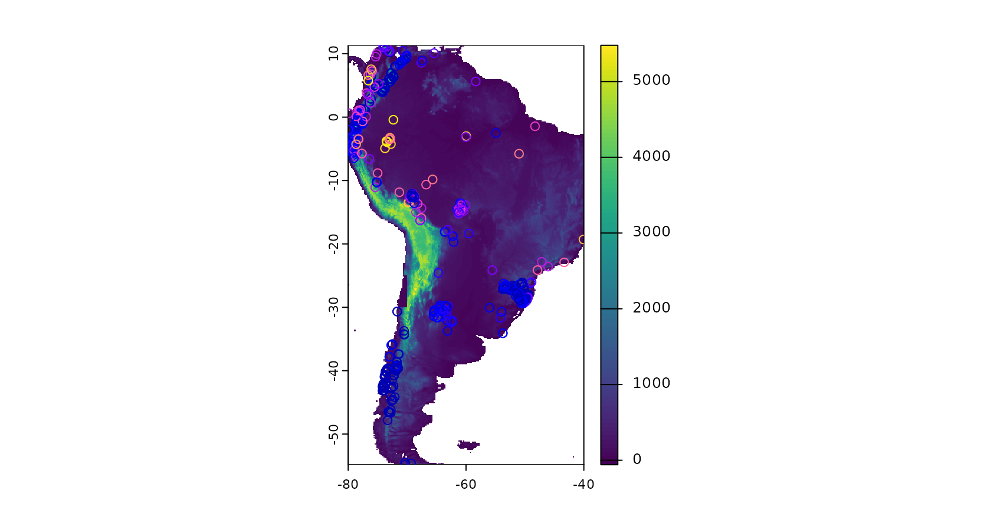
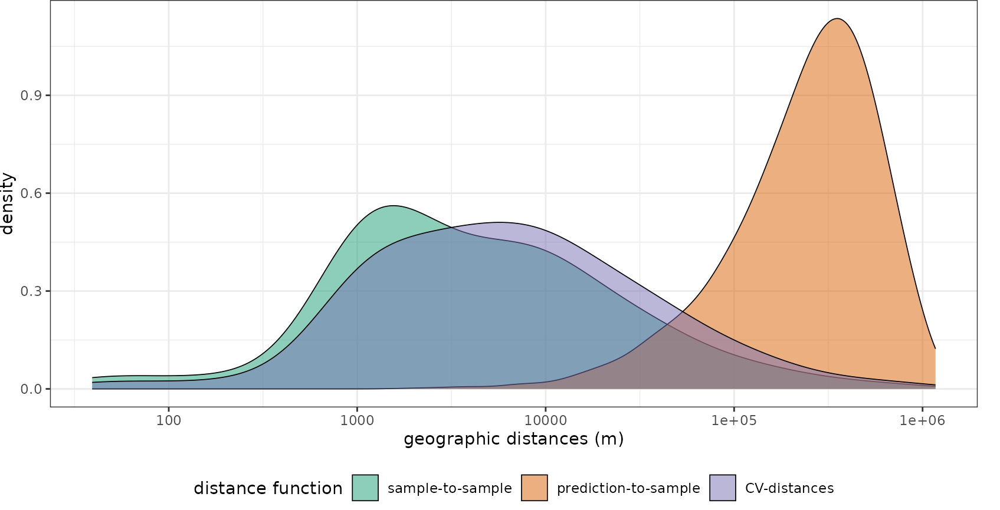
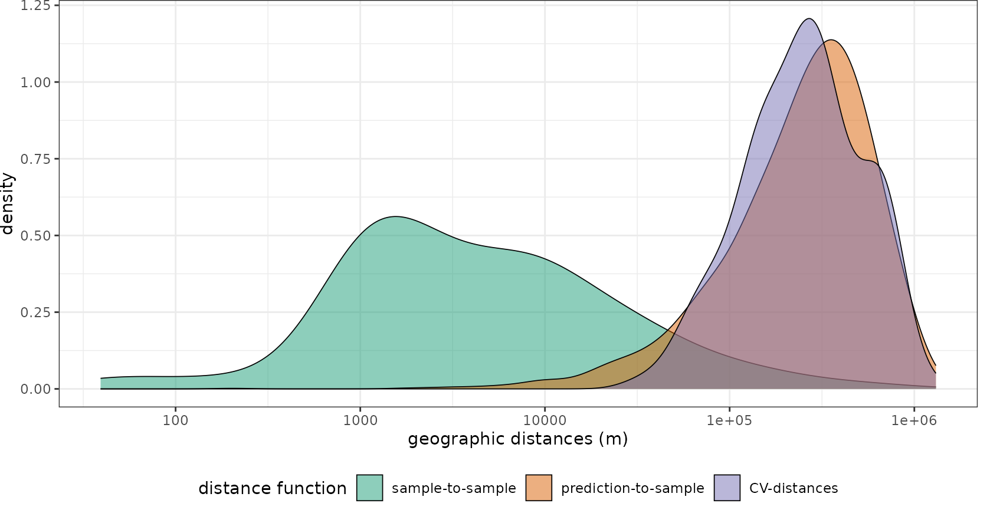
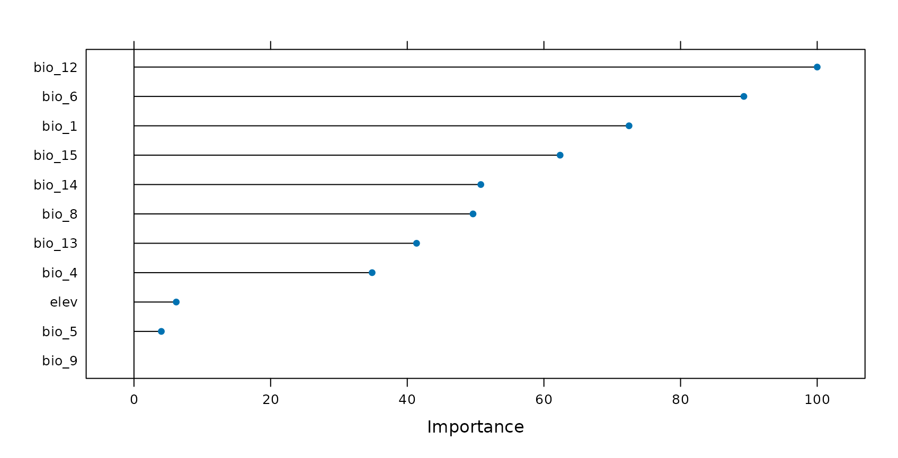
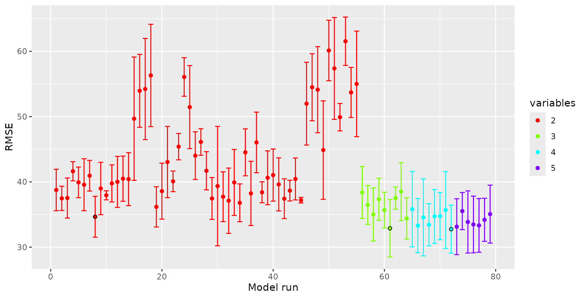
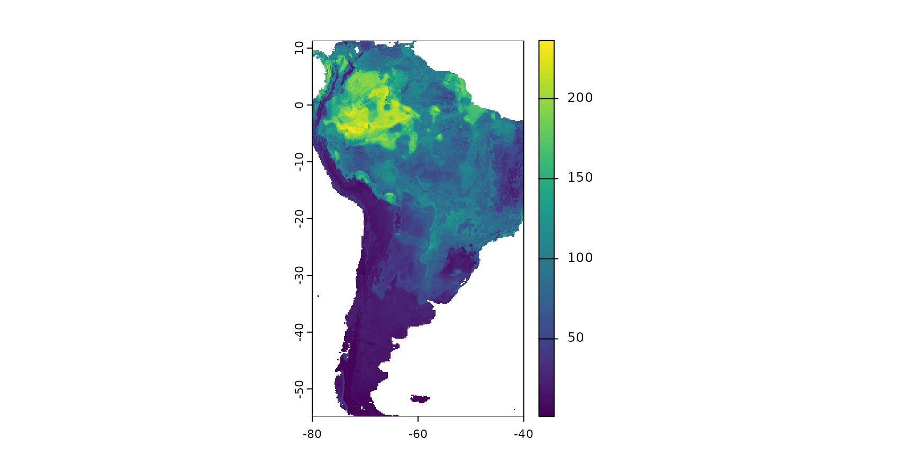
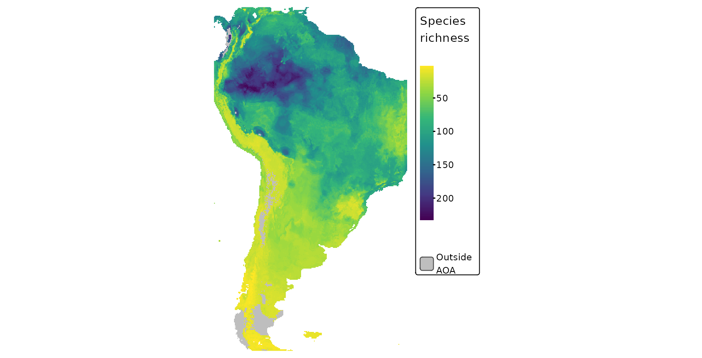
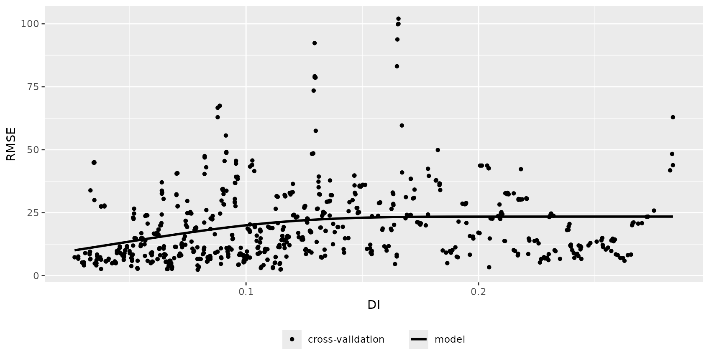
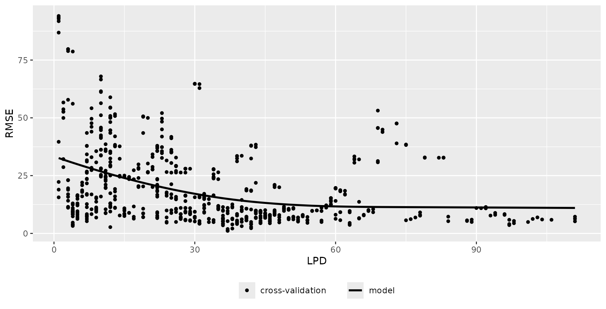
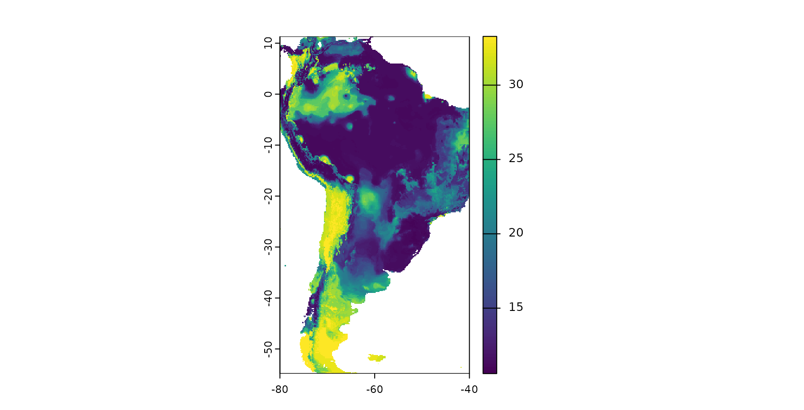

1. Introduction to CAST 1.0.0
Hanna Meyer, Marvin Ludwig, Carles Milà, Jan Linnenbrink, Fabian Schumacher
2024-03-13
Source:vignettes/cast01-CAST-intro.Rmd
cast01-CAST-intro.RmdIntroduction
Background
One key task in environmental science is obtaining information of environmental variables continuously in space or in space and time, usually based on remote sensing and limited field data. In that respect, machine learning algorithms have been proven to be an important tool to learn patterns in nonlinear and complex systems.
However, the field data (or reference data in general) are often extremely clustered in space (and time) and rarely present an independent and representative sample of the prediction area. In this case, standard machine learning strategies are not suitable, as they usually ignore the spatio-temporal dependencies. This becomes problematic in (at least) two aspects of predictive modelling: Overfitted models that are hardly able to make predictions beyond the location of the reference data, as well as overly optimistic error assessment. To approach these problems, CAST supports the well-known caret package (Kuhn 2018 to provide machine learning strategies that we designed for spatio-temporal data.
In this tutorial, we will guide through the package and show how CAST can be used to train spatial prediction models including objective error estimation, detection of spatial overfitting and assessment of the area of applicability of the prediction models. In order to follow this tutorial, we assume that the reader is familiar with the basics of predictive modelling nicely explained in Kuhn and Johnson 2013 as well as machine learning applications via the caret package.
How to start
To work with the tutorial, first install the CAST package and load the library:
If you need help, see
help(CAST)For this tutorial, we need a few additional packages:
Example of a typical spatio-temporal prediction task
For demonstration of the CAST functionalities, we will go through a typical spatial prediction task, which aims here at producing a spatially-continuous map of plant species richness for South America. As reference data, we use plant species richness data from plot-based vegetation surveys that are compiled in the sPlotOpen database described in Sabatini et al. 2021 and made available in the CAST package. We will use WorldClim climatic variables and elevation as predictors, assuming that they are relevant drivers of species richness. We will use Random Forests as a machine learning algorithm in this tutorial.
Description of the example dataset
## Simple feature collection with 6 features and 16 fields
## Geometry type: POINT
## Dimension: XY
## Bounding box: xmin: -63.94722 ymin: -30.98694 xmax: -63.32139 ymax: -29.75833
## Geodetic CRS: WGS 84
## PlotObservationID GIVD_ID Country Biome
## 1 1955 SA-AR-002 Argentina Dry tropics and subtropics
## 2 1956 SA-AR-002 Argentina Dry tropics and subtropics
## 3 1958 SA-AR-002 Argentina Dry tropics and subtropics
## 4 1960 SA-AR-002 Argentina Dry tropics and subtropics
## 5 1961 SA-AR-002 Argentina Dry tropics and subtropics
## 6 1963 SA-AR-002 Argentina Dry tropics and subtropics
## Species_richness bio_1 bio_4 bio_5 bio_6 bio_8 bio_9 bio_12
## 1 52 17.65000 463.9651 30.5 3.6 23.25000 11.70000 760
## 2 56 17.35417 459.5525 30.1 3.5 22.91667 11.46667 731
## 3 65 18.31667 473.3216 31.4 4.2 24.03333 12.25000 810
## 4 50 18.04167 485.8116 31.2 4.2 23.93333 11.81667 842
## 5 45 18.79167 478.4959 32.0 4.4 24.48333 12.65000 853
## 6 31 18.92083 478.9594 32.2 4.5 24.61667 12.76667 842
## bio_13 bio_14 bio_15 elev geometry
## 1 119 9 68.89403 416 POINT (-63.86056 -30.29722)
## 2 115 9 68.93396 468 POINT (-63.94722 -30.37222)
## 3 129 12 66.87429 232 POINT (-63.66278 -30.37806)
## 4 140 13 65.54655 129 POINT (-63.32139 -30.98694)
## 5 134 12 68.29005 231 POINT (-63.55694 -29.89889)
## 6 133 12 68.72808 243 POINT (-63.53972 -29.75833)The data include the extracted WorldClim and elevation information as well as the sampled species richness. Since we aim at making predictions for entire South America, we further need the WorldClimdata for this area.
#wc <- worldclim_global(var="bio",res = 10,path=tempdir())
#elev <- elevation_global(res = 10, path=tempdir())
#predictors_sp <- crop(c(wc,elev),st_bbox(splotdata))
#names(predictors_sp) <- c(paste0("bio_",1:19),"elev")
#note: if you prefer to work on a smaller dataset and not download any data,
#here is a subset of Chile:
predictors_sp <- rast(system.file("extdata", "predictors_chile.tif",package="CAST"))To get an impression on the spatial properties of the dataset, let’s have a look on the spatial distribution of the vegetation plots in South America, plotted on top of a elevation model:

Model training and prediction
To start with, lets use this dataset to create a “default” Random Forest model that predicts species richness based on some predictor variables. For performance assessment we use default 3-fold random cross-validation. To keep computation time at a minimum, we don’t include hyperparameter tuning (hence mtry was set to 2) which is reasonable as Random Forests are comparably insensitive to tuning.
predictors <- c("bio_1", "bio_4", "bio_5", "bio_6",
"bio_8", "bio_9", "bio_12", "bio_13",
"bio_14", "bio_15", "elev")
# note that to use the data for model training we have to get rid of the
# geometry column of the sf object: st_drop_geometry(splotdata)
set.seed(10) # set seed to reproduce the model
model_default <- train(st_drop_geometry(splotdata)[,predictors],
st_drop_geometry(splotdata)$Species_richness,
method="rf",tuneGrid=data.frame("mtry"=2),
importance=TRUE, ntree=50,
trControl=trainControl(method="cv",number=3, savePredictions = "final"))Based on the trained model we can make spatial predictions of species richness. To do this we load a multiband raster that contains spatial data of all predictor variables for South America. We then apply the trained model on this data set.

The result is a spatially comprehensive map of the species richness of South America. We see that simply creating a map using machine learning and caret is an easy task, however accurately measuring its performance is less simple. Though the map looks good on a first sight we now have to follow up with the question of how accurate this map is, hence we need to ask how well the model is able to map species richness.
Cross validation strategies for spatio-temporal data
Among validation strategies, k-fold cross validation (CV) is popular to estimate the performance of the model in view to data that have not been used for model training. During CV, models are repeatedly trained (k models) and in each model run, the data of one fold are put to the side and are not used for model training but for model validation. In this way, the performance of the model can be estimated using data that have not been included in the model training. Summary statistics can be calculated either by averaging the performance per fold (default in caret) or by calculating the statistics over all held-back data at once (CAST::global_validation).
The Standard approach: Random k-fold CV
In the example above we used a random k-fold CV that we defined in caret’s trainControl argument. More specifically, we used a random 3-fold CV. Hence, the data points in our dataset were RANDOMLY split into 3 folds. To assess the performance of the model let’s have a look on the output of the Random CV:
model_default## Random Forest
##
## 703 samples
## 11 predictor
##
## No pre-processing
## Resampling: Cross-Validated (3 fold)
## Summary of sample sizes: 470, 469, 467
## Resampling results:
##
## RMSE Rsquared MAE
## 25.75544 0.6651004 15.08417
##
## Tuning parameter 'mtry' was held constant at a value of 2
global_validation(model_default)## RMSE Rsquared MAE
## 25.9283336 0.6672803 15.0845659We see that species richness could be modelled with a R² of 0.66 which indicates a good fit of the data. Sounds good, but unfortunately, the random k fold CV does not give us a good indication for the map accuracy if the reference data are not a random sample of the prediction area. Random k-fold CV means that each of the three folds (with the highest certainty) contains data points from each spatial cluster. Therefore, a random CV cannot indicate the ability of the model to make predictions beyond the location of the training data (i.e. to map species richness). Since our aim is to map species richness, we rather need to perform a target-oriented validation which validates the model in view to spatial mapping.
Target-oriented validation
We are not interested in the model performance in view to random subsets of our vegetation plots, but we need to know how well the model is able to make predictions for areas without reference samples. To find this out, we need to repeatedly leave larger spatial regions of one or more vegetation plots out and use them as test data during CV. Several suggestions of spatial CV exist. CAST implements a straightforward way (CAST::createSpaceTimeFolds) and the sophisticated method of nearest neighbor distance matching (Mila et al 2022, Linnenbrink et al 2023) as either leave-one-out CV (CAST::nndm) or as k-fold CV (CAST::knndm).
CAST’s function “CreateSpaceTimeFolds” is designed to provide index arguments used by caret’s trainControl. The index defines which data points are used for model training during each model run and reversely defines which data points are held back. Hence, using the index argument we can account for the dependencies in the data by leaving the complete data from one or more regions out (LLO CV), from one or more time steps out (LTO CV) or from locations and time steps out (LLTO CV). In this example we’re focusing on LLO CV. We use the column “Country” to define the location of the samples and split the data into folds using this information, i.e. we avoid that data from the same country are located in both, training and test data. Analog to the random CV we split the data into three folds, hence three model runs are performed each leaving one third of all data out for validation.
Knndm tries to find a k-fold configuration such that the integral of the absolute differences (Wasserstein W statistic) between the empirical nearest neighbour distance distribution function between the test and training data during CV, and the empirical nearest neighbour distance distribution function between the prediction and training points, is minimised. In other words, we try to split the data into folds so that the difficulty of the prediction during cross-validation is comparable to the difficulty when deploying the model for entire South America, where the difficulty is defined by spatial distances. Note, that feature space distances are also an implemented option.
See tutorial on the cross-validation in this package for more information.
Example for CreateSpacetimeFolds:
set.seed(10)
indices_LLO <- CreateSpacetimeFolds(splotdata,spacevar = "Country",
k=3)Example for knndm:
Let’s compare how well these strategies fit the prediction task, especially in comparison to a random cross-validation. We will use CAST’s geodist function for that. Geodist calculates nearest neighbor distances in geographic space or feature space between training data as well as between training data and prediction locations. Optional, an that is what we want to focus on here, the nearest neighbor distances between training data and CV folds is computed. See tutorial on geodistance visualizations in this package for more information.
plot(geodist(splotdata,predictors_sp,cvfolds =model_default$control$indexOut))+
scale_x_log10(labels=round)
plot(geodist(splotdata,predictors_sp,cvfolds =indices_LLO$indexOut))+
scale_x_log10(labels=round)
plot(geodist(splotdata,predictors_sp,cvfolds =indices_knndm$indx_test))+
scale_x_log10(labels=round)
We see that using random folds, we’re only testing how well the model can make predictions for new areas that are a few hundreds of meters away from the training data. Using createSpaceTimeFolds with the Country as spatial unit (i.e. leave-country-out CV), we produce prediction situations that are even harder than the prediction task. Knndm provides the best option, since the CV distances that we create during cross-validation are comparable to what is required when we predict for the entire area.
model <- train(st_drop_geometry(splotdata)[,predictors],
st_drop_geometry(splotdata)$Species_richness,
method="rf",
tuneGrid=data.frame("mtry"=2),
importance=TRUE,
trControl=trainControl(method="cv",
index = indices_knndm$indx_train,
savePredictions = "final"))
model## Random Forest
##
## 703 samples
## 11 predictor
##
## No pre-processing
## Resampling: Cross-Validated (10 fold)
## Summary of sample sizes: 529, 499, 378
## Resampling results:
##
## RMSE Rsquared MAE
## 35.37794 0.4744932 21.07389
##
## Tuning parameter 'mtry' was held constant at a value of 2
global_validation(model)## RMSE Rsquared MAE
## 36.4862413 0.3951656 21.7633237By inspecting the output of the model, we see that in view to new locations, the R² is much lower and the RMSE much higher compared to what was expected from the random CV.
Apparently, there is considerable overfitting in the model, causing a good random performance but a poor performance in view to new locations. This might partly be attributed to the choice of variables where we must suspect that certain variables are misinterpreted by the model (see Meyer et al 2018 or talk at the OpenGeoHub summer school 2019).
Let’s have a look at the variable importance ranking of Random Forest. Assuming that certain variables are misinterpreted by the algorithm we should be able to produce a higher LLO performance when such variables are removed. Let’s see if this is true…

Removing variables that cause overfitting
CAST’s forward feature selection (ffs) selects variables that make sense in view to the selected CV method and excludes those which are counterproductive (or meaningless) in view to the selected CV method. When we use LLO as CV method, ffs selects variables that lead in combination to the highest LLO performance (i.e. the best spatial model). All variables that have no spatial meaning or are even counterproductive won’t improve or even reduce the LLO performance and are therefore excluded from the model by the ffs.
ffs is doing this job by first training models using all possible pairs of two predictor variables. The best model of these initial models is kept. On the basis of this best model the predictor variables are iterativly increased and each of the remaining variables is tested for its improvement of the currently best model. The process stops if none of the remaining variables increases the model performance when added to the current best model.
So let’s run the ffs on our case study. This process will take 1-2 minutes…
set.seed(10)
ffsmodel <- ffs(st_drop_geometry(splotdata)[,predictors],
st_drop_geometry(splotdata)$Species_richness,
method="rf",
tuneGrid=data.frame("mtry"=2),
verbose=FALSE,
ntree=50,
trControl=trainControl(method="cv",
index = indices_knndm$indx_train,
savePredictions = "final"))
ffsmodel## Selected Variables:
## bio_1 bio_5 bio_14
## ---
## Random Forest
##
## 703 samples
## 3 predictor
##
## No pre-processing
## Resampling: Cross-Validated (10 fold)
## Summary of sample sizes: 529, 499, 378
## Resampling results:
##
## RMSE Rsquared MAE
## 34.70998 0.4812505 22.08713
##
## Tuning parameter 'mtry' was held constant at a value of 2
global_validation(ffsmodel)## RMSE Rsquared MAE
## 35.5101969 0.4253719 22.8368156
ffsmodel$selectedvars## [1] "bio_1" "bio_5" "bio_14"Using the ffs with LLO CV, the RMSE could be decreased. Only few variables have been selected for the final model. All others are removed because they have (at least in this small example) no spatial meaning or are even counterproductive.
By plotting the results of ffs, we can visualize how the performance of the model changed depending on the variables being used:
plot(ffsmodel)
See that the best model using all combinations of two variables. Based on the best performing twi variables, using any third variable could slightly increase the R². Any further variable could not improve the LLO performance. Note that the R² features a high standard deviation regardless of the variables being used. This is due to the small dataset that was used which cannot lead to robust results here.
What effect does the new model has on the spatial representation of species richness?

Area of Applicability
Still it is required to analyse if the model can be applied to the entire study area of if there are locations that are very different in their predictor properties to what the model has learned from. See more details in the vignette on the Area of applicability and Meyer and Pebesma 2021.
### AOA for which the spatial CV error applies:
AOA <- aoa(predictors_sp,ffsmodel,LPD = TRUE,verbose=FALSE)
tm_shape(prediction)+
tm_raster(title="Species \nrichness",palette=viridis(50),style="cont")+
tm_shape(AOA$AOA)+
tm_raster(palette=c("1"=NA,"0"="grey"),style="cat",legend.show = FALSE)+
tm_layout(frame=FALSE,legend.outside = TRUE)+
tm_add_legend(type="fill",col="grey",border.lwd=0, labels="Outside \nAOA")
The figure shows in grey areas that are outside the area of applicability, hence predictions should not be considered for these locations. See tutorial on the AOA in this package for more information. We also see that the area to which the low random CV error applies, is comparably small.
Error profiles
The aoa function returned, in addition to the AOA also the dissimilarity index (DI) and the local point density (LPD). The DI indicates the distance in feature space to a nearest training data point and the LPD indicates the data point density in feature space.
We expect, that there is a relationship between DI/LPD and the prediction performance, i.e. we expect that areas that have a low DI and a high LPD (well covered by reference data) have a lower error. We are going to analyze this using CAST::errorProfiles.
errormodel_DI <- errorProfiles(model_default,AOA,variable="DI")
errormodel_LPD <- errorProfiles(model_default,AOA,variable="LPD")
plot(errormodel_DI)
plot(errormodel_LPD)
Since the relationship between LPD and the RMSE seems to be comparably high, we’re going to use this to model the error for the entire prediction area.

Conclusions
To conclude, the tutorial has shown how CAST can be used to facilitate target-oriented (here: spatial) CV on spatial and spatio-temporal data which is crucial to obtain meaningful validation results. Using the ffs in conjunction with target-oriented validation, variables can be excluded that are counterproductive in view to the target-oriented performance due to misinterpretations by the algorithm. ffs therefore helps to select the ideal set of predictor variables for spatio-temporal prediction tasks and gives objective error estimates.
Final notes
The intention of this tutorial is to describe the motivation that led to the development of CAST as well as its functionality. Priority is not on modelling species richnessin the best possible way but to provide an example for the motivation and functionality of CAST that can run within a few minutes. Hence, only a very small subset of the entire sPlotOpen dataset was used. Keep in mind that due to the small subset the example is not robust and quite different results might be obtained depending on small changes in the settings.
Further Reading
Tutorials
The talk from the OpenGeoHub summer school 2019 on spatial validation and variable selection: https://www.youtube.com/watch?v=mkHlmYEzsVQ.
Tutorial (https://youtu.be/EyP04zLe9qo) and Lecture (https://youtu.be/OoNH6Nl-X2s) recording from OpenGeoHub summer school 2020 on the area of applicability. As well as talk at the OpenGeoHub summer school 2021: https://av.tib.eu/media/54879
Talk and tutorial from the OpenGeoHub 2022 summer school on Machine learning-based maps of the environment - challenges of extrapolation and overfitting, including discussions on the area of applicability and the nearest neighbor distance matching cross-validation (https://doi.org/10.5446/59412).
Scientific documentation of the methods
Spatial cross-validation
Milà, C., Mateu, J., Pebesma, E., Meyer, H. (2022): Nearest Neighbour Distance Matching Leave-One-Out Cross-Validation for map validation. Methods in Ecology and Evolution 00, 1– 13. https://doi.org/10.1111/2041-210X.13851
Linnenbrink, J., Milà, C., Ludwig, M., and Meyer, H.: kNNDM (2023): k-fold Nearest Neighbour Distance Matching Cross-Validation for map accuracy estimation. EGUsphere [preprint]. https://doi.org/10.5194/egusphere-2023-1308
Meyer, H., Reudenbach, C., Hengl, T., Katurji, M., Nauss, T. (2018): Improving performance of spatio-temporal machine learning models using forward feature selection and target-oriented validation. Environmental Modelling & Software, 101, 1-9. https://doi.org/10.1016/j.envsoft.2017.12.001
Spatial variable selection
Meyer, H., Reudenbach, C., Hengl, T., Katurji, M., Nauss, T. (2018): Improving performance of spatio-temporal machine learning models using forward feature selection and target-oriented validation. Environmental Modelling & Software, 101, 1-9. https://doi.org/10.1016/j.envsoft.2017.12.001
Meyer, H., Reudenbach, C., Wöllauer, S., Nauss, T. (2019): Importance of spatial predictor variable selection in machine learning applications - Moving from data reproduction to spatial prediction. Ecological Modelling. 411. https://doi.org/10.1016/j.ecolmodel.2019.108815
Area of applicability
- Meyer, H., Pebesma, E. (2021). Predicting into unknown space? Estimating the area of applicability of spatial prediction models. Methods in Ecology and Evolution, 12, 1620– 1633. https://doi.org/10.1111/2041-210X.13650
Applications and use cases
Meyer, H., Pebesma, E. (2022): Machine learning-based global maps of ecological variables and the challenge of assessing them. Nature Communications, 13. https://www.nature.com/articles/s41467-022-29838-9
Ludwig, M., Moreno-Martinez, A., Hoelzel, N., Pebesma, E., Meyer, H. (2023): Assessing and improving the transferability of current global spatial prediction models. Global Ecology and Biogeography. https://doi.org/10.1111/geb.13635.